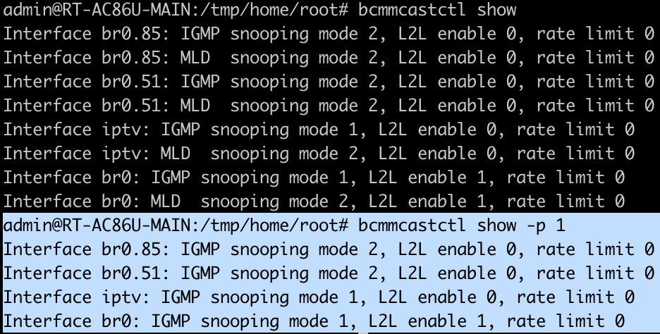

1. 前置条件与运行环境
1.1 术语
- 光猫：是指由电信运营商安装在用户侧的网络设备。(在本文中，是E-140W-P)
- 主路由器：是指用户自行购买的，具有PPPoE拨号功能，以及VLAN设置功能的网络设备。(在本文中，是以ASUS RT-AC86U为主节点)
- ASUS AiMesh ：是指ASUS公司的专有AiMesh技术，以实现主节点与AiMesh节点之间的统一管理。
- AiMesh 节点：是指由ASUS AiMesh主节点统一管理的接入点。（本文中，可以理解为具有有线与无线接入能力的AP）。
1.1 前置条件
- 光猫已经改成桥接，交由路由器拨号接入Internet。
- 光猫的LAN3或LAN4 口上绑定了传输IPTV的 VLAN 51和VLAN 85
- 主路由器的WAN口与光猫的LAN3或LAN4通过网线直连。
1.2 运行环境
- 网络设备
- 光猫 [E-140W-P]
- 主路由器 （Ai Mesh主节点） [ASUS RT-AC86U / RT-AC86U_386.5_0_cferom_ubi_0fd614b_koolcenter.w]
- AiMesh节点-1 [ASUS RT-AC68U / RT-AC68U_386.5_0_0fd614b_koolcenter.trx]
- AiMesh节点-2,3,4 [Linksys EA6700 / RT-AC68U_386.5_0_0fd614b_koolcenter.trx]
- IPTV机顶盒 [华为悦盒 EC6108V9C]
注1：红色标记的设备 是本文所涉及的硬件设备。
注2：AiMesh节点-2,3,4 与本文目标无关。（需要注意的是，在Linksys EA6700上运行的 386.5_0 固件，其外壳上标记的LAN1口是运行时固件中被认定的WAN口。所以，当在AiMesh有线组网时，必须将网线插在外壳标记的LAN1口上，会导致组网失败。救活"没有开放WIFI接入"的AiMesh节点路由器，则需要用网线连接LAN口与电脑，并在电脑上设置为192.168.50.0/24网段中的地址，例如192.168.50.11访问IP地址为192.168.50.1"失联"AiMesh节点路由器。）
注3：下图中显示为RT-AC66U B1的AiMesh节点，实际为「AiMesh节点-2,3,4」中的一个。（没错，Linksys EA6700刷的RT-AC68U固件，显示为RT-AC66U B1）
- 光猫到IPTV机顶盒的网络连接
- 物理链路
光猫[LAN4] --网线-- [WAN]主路由器[LAN] --网线-- [WAN]AiMesh节点-1[LAN1] --网线-- [LAN]IPTV机顶盒
注1：这里 [WAN]主路由器[LAN] 内的[LAN]是指任意一个LAN端口。
注2：这里 [WAN]AiMesh节点-1[LAN1] 内的[LAN1]是指「AiMesh节点-1」上的LAN1口，和下面提到的 robocfg 配置的 1t 直接相关。
- 光猫A面IP地址分配
由于光猫A面接入的是本地AiMesh网络，与Internet无关，所以A面的IP地址分配由主路由器（AiMesh主节点）完成，而AiMesh节点侧不分配IP地址，只透传DHCP数据包。
1.3 RT-AC68U与RT-AC86U的固件差异
虽然AC68U与AC86U都是用了Koolcenter的386.5_0的固件，但是
- AC68U是基于Linux 2.6，支持 robocfg 配置VLAN且不需要额外配置IGMP Snooping
- AC86U是基于Linux 4.1，需要通过 vconfig 和 brctl 配置VLAN与网桥，以及通过 bcmmcastctl 配置组播IGMP Snooping
2. 核心目标与关键步骤
核心目标
- 保持AiMesh 网络的「一主四从」网络拓扑不变，Internet网络接入功能不变。
- 实现IPTV机顶盒，通过有线网络连接至AiMesh节点时，可以播放IPTV直播。
关键步骤
- 主路由器的DHCP Option添加。
- 主路由器的上的VLAN51,85建立在WAN以及LAN之间。
- 主路由器的上IGMP snooping开启。
- 主路由器的DHCP Option配置、VLAN配置与IGMP snooping开启脚本持久化，可以任意断电重启。
- 在AiMesh节点上，实现节点本地的"上行WAN"与接到IPTV机顶盒的LAN的链路中，支持VLAN51,85，并将配置脚本持久化。
3. 工具与基本命令
3.1 VLAN的添加与删除
- 设置VLAN名称与类型
vconfig set_name_type DEV_PLUS_VID_NO_PAD
使得 vlan_name = interface.vlan_id
- 添加VLAN
vconfig add <interface> <vlan_id>
- 删除VLAN
vconfig rem <vlan_name>
3.2 网桥的添加、删除与关联VLAN
- 添加网桥
brctl addbr <bridge_name>
- 删除网桥
brctl delbr <bridge_name>
- 关联VLAN
brctl addif <bridge_name> <vlan_name>
- 查看网桥
brctl show [bridge_name]
3.3 IGMP snooping 控制
- 配置IGMP snooping
bcmmcastctl mode -i <vlan_name> -p 1 -m <0,1,2> 其中<disabled(0), standard(1), blocking(2)>，而 -p 1 是特指igmp。
- 查看IGMP snooping
用 bcmmcastctl show 查看全部interface 或者使用 bcmmcastctl show -p -1 仅查看IGMP相关的interface。
3.4 robocfg 配置物理端口与VLAN的映射
(注意， robocfg 适用于AC68U等基于BCM4708芯片、Linux内核2.6的固件，不适用于AC86U这样基于BCM4906芯片、Linux 4.1内核的固件)
- VLAN标签的端口绑定
robocfg vlan <vlan_id> ports "<port>t <port>t"
- 查看VLAN标签与绑定的端口
robocfg show
4. 实现方法
4.1 主路由的VLAN与网桥
主路由的WAN为 eth0 ，LAN为 br0 。
vconfig set_name_type DEV_PLUS_VID_NO_PAD
vconfig add eth0 85
vconfig add eth0 51
vconfig add br0 85
vconfig add br0 51
brctl addbr iptv
brctl addif iptv eth0.85
brctl addif iptv eth0.51
brctl addif iptv br0.85
brctl addif iptv br0.51
ifconfig eth0.85 up
ifconfig eth0.51 up
ifconfig br0.85 up
ifconfig br0.51 up
ifconfig iptv up
4.2 主路由的IGMP Snooping配置
在当没有在主路由上配置IGMP snooping为standard(1)的结果，会导致IPTV的直播频道只能播放1分钟或2分钟，之后就会画面静止。
bcmmcastctl mode -i iptv -p 1 -m 1
bcmmcastctl mode -i br0 -p 1 -m 1
4.3 DHCP Option的添加
注意，如果不添加 = 号后面的 lan，则有可能导致dnsmasq发出的DHCP数据包，在Wireshark解析下出现 Malformed Packet: DHCP/BOOTP 的情况。
dhcp-option-force=125,00:00:00:00:1a:02:06:48:47:57:2d:43:54:03:08:45:2d:31:34:30:57:2d:50:0b:02:00:55:0a:02:20:00
dhcp-option-force=60,00:00:01:00:02:03:43:50:45:03:0e:45:38:20:47:50:4f:4e:20:52:4f:55:54:45:42:04:03:31:2e:30
dhcp-option=15
dhcp-option=28
注意：由于dhcp-option 15对应的是 Domain Name，所以在AC86U的主路由上，需要配置 RT-AC86U's Domain Name (RT-AC86U 的网域名称)。名称任意，但是不能为空，否则会导致B面地址无法获取的情况。
4.4 「AiMesh节点-1」的VLAN配置
「AiMesh节点-1」不同于AC86U的主节点，是AC68U，所以可以使用 robocfg。另外，IPTV机顶盒通过网线插入在了LAN1口。
robocfg vlan 85 ports "0t 1t" vlan 51 ports "0t 1t"
其中， 0t 指的是WAN口要带上VLAN对于的标签， 1t 指的是LAN1口要带上VLAN对应的标签，总共配置85和51两个端口。
当然，也可以配置成：
robocfg vlan 85 ports "0t 1t 2t 3t 4t" vlan 51 ports "0t 1t 2t 3t 4t"
在这种情况下，IPTV机顶盒可以插在任意的LAN口上了。
4.5 主路由配置持久化
- 在koolshare软件中心里，安装 「上海电信IPTV v1.2」插件。
- 根据 4.1-4.3 的配置，修改和替换 /jffs/.koolshare/scripts/ 目录下的 shiptv_config.sh 和 shiptv_status.sh 两个脚本，并将 /jffs/.koolshare/init.d/ 目录下的 S95Shiptv.sh 内容，更新到与 shiptv_config.sh 一致。（ S95shiptv.sh 脚本如果存在，可以删除。）
4.6 AiMesh节点 robocfg 配置持久化
由于在实例中，AiMesh节点所使用的是AC68U的固件，所以有 robocfg 的工具支持。另一方面，但由于其不是主路由。所以需要将 4.4 中的配置命令，追加到在 /jffs/scripts/services-start 的最后，而同一目录下的 wan-start 工作在AiMesh节点时，不会生效。
5. 实现结果
- 光猫到IPTV机顶盒的逻辑链路
光猫 --[VLAN 51,85]-- 主路由器 --[VLAN 51,85]-- AiMesh节点-1 --[VLAN 51,85]-- IPTV机顶盒
- 「AiMesh节点-1」上支持IPTV机顶盒的VLAN
- 使用 robocfg show 查看
- 主路由的VLAN 51,85配置
- 使用 cat /proc/net/vlan/config 查看
- 使用 ip addr 查看
- 主路由服务于VLAN 51,85的网桥
名为 iptv 的网桥，负责了51,85两个VLAN的桥接。
- 主路由IGMP snooping
在网桥 iptv 以及 主路由器的 LAN (br0) 上，都启用了IGMP snooping( snooping mode 1 ) ，但在 br0.85 以及 br0.51 上，都blocking了IGMP snooping ( snooping mode 2 )
- 主路由网络吞吐
- eth0 主路由WAN口，被光猫分配到的是 192.168.1.0/24的地址，即192.168.1.3
- br0 主路由内部的LAN，自主DHCP的网段是 10.0.0.0/24的地址，即主路由IP地址为10.0.0.1